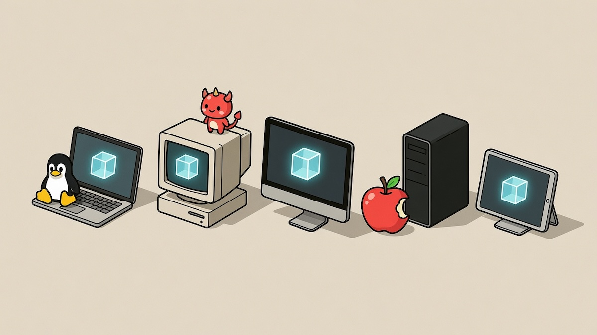

I Want to Build a Sandboxed, Cross-Platform Software Distribution System

Followup: unfortunately the community response to this post was fairly cynical and disappointing. I wrote a followup post here.
I'm writing this post to solicit feedback from the community. You may or may not have been following my blog. I've been tinkering on a small virtual machine named UVM for a while. This is a side project, and I've been having fun working on it, but I have a bigger vision for what it could become. I wanted to share that vision and invite comments. I haven't really talked about it online so far, in part because I'm a bit shy to be honest. The internet can sometimes be a very cynical place, but I decided to take the risk anyway. My only request is that if you comment on the ideas presented here, whether on X, HN, or reddit, you please try to keep the feedback constructive rather than simply dismissive.
There are several unsolved problems around software distribution, both for the people writing software, and for end users. On the developer side, it can be tricky to build software that will run on every platform. On the user side, we now live in a world where vulnerabilities can be automatically discovered, and due to supply chain attacks, it feels more dangerous than ever to install software with brew or try some random project on GitHub. Even major projects like the OpenCode harness pull in 300+ dependencies, which makes it hard to audit everything. We're functioning with security models that are completely outdated. There's no way that random programs should have access to your entire home directory, potentially on the same machine where you do your banking.
What I'd like to build is something that resembles the package managers that we're all familiar with (e.g. apt, brew), but that allows installing and running the same programs on every major platform (e.g. Mac, Linux, Windows, BSD, etc), and to run programs in a way that's sandboxed by default. This means something that's probably similar to the capabilities model found on mobile, where programs need to either ask for permission, or be explicitly allowed to perform potentially dangerous operations. I think this is something that needs to exist, and would be beneficial for a lot of people, but currently doesn't.
This is a sketch of what I would like the CLI to look like, just to give you a feel of how it could be used:
# It would be easy to provide a curl command to install UVM
curl --proto '=https' --tlsv1.2 -sSf https://uvmplatform.org/sh | sh
# Run a program, no install, fast startup
uvm run some_program
# Run a specific version of a program, in a safe sandbox
uvm run some_program@2.5
# Download a self-contained package for a given program
# In the current directory
uvm download some_program
# Download auto-generated binaries for any platform
# Self-contained binaries embed a lightweight VM and sandbox
uvm download-binary --platform=x86_64 some_program
Summarizing the above, I would like to get to a place where UVM can be installed easily on many platforms, programs can be safely run in a sandboxed environment with a single command without explicitly installing them, and you can even download programs and take them with you, either as self-contained UVM app images or as self-contained platform-specific binaries that embed UVM.
In the rest of this blog post, I'll go over how I think this can be built, where I'm at, the compromises involved, and also try to anticipate some of the criticism of the approach I'm presenting.
Approach and Compromises
I have a background in JIT compiler design, and what I've been building is a minimalistic virtual machine, with a small instruction set that's designed to easily map to x86-64, arm64, and RV64 (RISC-V). You can think of the virtual machine as a simplified model of a 64-bit computer, designed in such a way that I know it's possible to build a JIT for the common 64-bit targets and get good performance. The instruction set is simple enough that I believe it might be possible to build a decent JIT compiler in a matter of days or weeks.
The VM has a number of subsystems that allow it to interface with the outside world (input, sound, graphics, file I/O, networking). This is similar to Linux system calls, but once again simplified. The design of the VM, and the subsystems in particular, is opinionated. This is a compromise, which I think might make some people recoil, but I hope you'll bear with me as I explain the potential advantages.
UVM has a minimalistic design, and that extends to its subsystems as well. In particular, it exposes only low-level APIs, and there is no Foreign Function Interface (FFI). That means the only way to interface with the outside world is through the low-level APIs provided by the VM. For example, to produce graphics, you can open a window, and then present frames, in the form of a frame buffer (an array of pixels). To output sound, you directly write audio samples to a virtual audio output device. What UVM tries to do is reduce the API surface of the functions it exposes to running programs as much as possible, to maximize portability and minimize chances of API breakage.
This might seem very limiting, but the tradeoff is that these APIs are trivial to implement on any modern platform, and they can remain very stable over time. New APIs will be added as needed, but the evolution of the VM will be relatively slow and intentional. I'm currently still iterating on the VM's design, but my goal would be to reach a point where features only get added to the VM, but never removed. After the initial design has been stabilized, UVM tries as hard as it can to never break your code. That way, if you compile a program to run on UVM, there would be a good chance that it would still work in 20 years.
I expect a negative reaction to this design, because one of the obvious implications is that currently, UVM has no access to GPUs, and your only avenue to produce graphics is through software rendering. The reality though is that most of the software that you use doesn't need a GPU, and CPUs have gotten incredibly fast while you weren't looking. The Nintendo 64, one of the first hardware-accelerated 3D consoles, had 562.5MB/s of memory bandwidth, and a total of 8MB of RAM (with the Expansion Pak). I'm sitting here typing on a MacBook Air with 10 cores, 32GB of RAM and 153GB/s of memory bandwidth, but I'm not even sure if this counts as a high-end machine.
My belief is that it's impossible to design a perfect virtual machine or a perfect platform that will be suitable for everyone's needs, but I think there's a ton of software that could be made to run on UVM, including but not limited to:
-
Text/code editors
-
Office/productivity software
-
Command-line utilities of all kinds
-
Music software (synths, sequencers, DAWs, etc.)
-
2D games of all kinds
-
3D games using software rendering (~2010-level graphics)
-
Smaller AI models that don't need a GPU
-
Interpreters for your favorite language (Python, LISP, BASIC REPL?)
-
Agentic coding harnesses
-
Web servers or custom backends for your apps
An additional key feature I want for UVM is to make it so every program is fully self-contained, with no dynamic linking. One program is one file, that you can directly run through a CLI command. This is again intentional. It's so you can easily take programs with you. Keep the programs that you like, put them in your cloud folder or on a USB stick, and bring them with you to other systems.
Existing Alternatives
All of the key features I've described exist in one form or another in other systems, but I don't believe they exist combined in a way that's really convenient. For example, macOS has .app package files that are self-contained apps. They aren't portable though, and you can't just run the programs without installing them first. Docker exists and it's a way to ship self-contained, sandboxed software, but it's not really cross-platform, the Docker images are sometimes very bulky, and it's awkward to package software that opens a window and has any kind of user interface.
On Linux, there is AppImage, which is a self-contained app image format. It matches the self-contained vision of UVM, but provides no sandboxing by itself. It's designed to be portable among Linux distributions, but it only works on Linux, and is specific to each CPU architecture. Flatpak and Snap offer better sandboxing, but they are again Linux-only and CPU-specific.
Nix is a package manager that supports Mac/Linux/WSL and is based on reproducible builds. You provide a build recipe, and it caches compiled binaries. I think that Nix is hugely valuable, but it still leaves the burden of writing portable software on developers, and it doesn't sandbox software.
Pkgx is a tool that can download and run tools on demand. It has the convenience factor of what I discussed earlier, that is, you can launch a program with a single command without needing a separate command to install it, but it also doesn't attempt to solve portability. Pkgx does have a sandbox, but it feels insufficient as programs can still read your entire system.
An obvious comparison is the Java Virtual Machine (JVM), which came with the promise of write once, run anywhere. I think in many respects it has done a good job of that, but it has a reputation for being bloated and having slow startup times. It's also a poor compilation target for languages such as C/C++/Rust/Zig. It does have the .jar file format for bundling software, but it doesn't have an associated software distribution platform, nor does it sandbox by default.
There's also Wasm. Its original intent was to be a kind of universal cross-platform bytecode format. There was a lot of hype around it. It feels like it's in a bit of an awkward place though because if you deploy Wasm for the web, you have to generate JavaScript bindings, and you have no real threads, which is very inconvenient. The browser never gave Wasm true native APIs. Outside of the browser, there is WASI, but it also sort of fell short of what people wanted, and it's super annoying that the in-browser vs off-browser Wasm worlds have to use different APIs.
Web browsers themselves are kind of our de-facto cross-platform VM. You can just click a link, and run programs without installing them. That being said, the web has the downside that it more or less forces you to write JavaScript, or go through JavaScript bindings, and then again you have no real threads. The workflow to compile your native code to the web is not smooth. You also can't easily download a webpage. That limits offline usability, and it means you have to hope that your favorite web applications will continue to stay available thanks to the generosity of the author, but many great websites are no more.
Other Implementation Options
A question that I think might come up is why not build UVM on top of Wasm. The answer is that it would have been possible, but it means introducing non-standard extensions to Wasm. There is a Wasm component model that can be used to build extensions, but this component model itself is not fully standardized. Building a kind of non-standard Wasm runtime risks running into The Alternative Implementation Problem, where I have to maintain forks of the Wasm toolchain to target my not-quite-Wasm implementation and explain to people why their programs don't automatically work on it.
Another potential alternative would be to emulate an existing architecture. For example I could try to emulate an x86-64 Linux environment. This is feasible, but I think the main downside is complexity. There are ~1500 x86 instructions, ~4500 variants in total. This can be restricted if we say we emulate older generations of x86 CPUs, but another complex piece is that we might also need to emulate a large number of Linux system calls, and so we end up emulating parts of the Linux kernel, as well as an X server, etc. At the end of the day, I think it's possible to do simpler, and in terms of development speed, portability and maintainability, simpler is better.
I mentioned 2D and 3D graphics earlier, and I expect that there could be some pushback since WebGPU exists as a portable option for 2D/3D graphics. In theory, UVM could expose this API to programs. The reason I'm somewhat reluctant to do that is that WebGPU exposes hundreds of methods. Its API surface is huge, essentially multiple times larger than the entirety of UVM in its current state. WebGPU itself contains a JIT compiler for shaders, which is a huge dependency to lean on. This goes against the goal of making it easy to port UVM to new architectures. As it is, it might be feasible even for a single programmer to port UVM even to fringe or hobby operating systems in a relatively short time, which I think is pretty cool.
The architecture of UVM is not finalized, but it's very minimalistic. I think that working with a simple architecture can feel liberating, for the same reason that people enjoy retrocomputing, because a lot of the complexity is taken away.
What about SIMD?
Currently, the UVM architecture has no SIMD instructions. This is to keep the VM's design as simple as possible. For instance, x86 machines have 512-bit wide SIMD units, but arm64 on Macs only has 128-bit wide SIMD. In parallel, new SIMD instructions are added all the time by different vendors, but there's never a complete overlap of features between different CPUs. Intel and AMD have recently standardized the AI Compute Extensions (ACE), which add matrix-tile operations and low-precision numeric formats aimed at AI workloads.
One thing that I think would be an easy compromise to make is to provide a set of common SIMD kernels as part of the VM. For example, UVM could provide a host function that performs a dot product between arbitrarily wide vectors in memory. We might also want to provide a matrix multiplication kernel as that's very widely used in machine learning. I think it could also make sense to provide efficient kernels for things like alpha blending to accelerate 2D/3D software rendering.
My current thinking is that the VM could provide a collection of fast useful kernels that grows over time. This might seem like a contradiction as I previously stated that the VM aims to offer a minimalistic set of low-level APIs, but kernels look fairly high-level. It's a tradeoff, but in this case it's about where we put the complexity. Kernels are pure functions that operate entirely on memory managed by UVM. They don't perform any I/O. Kernels can potentially have complex implementation, but this is hidden away from the users, under a fairly simple high-level interface (e.g. multiply two matrices at addresses A and B with dimensions M, N, P, and write the result at address C).
A whole subfield of research has recently emerged around using AI agents to implement and optimize GPU kernels. I've personally reviewed some of those papers for NeurIPS 2025. The same thing can be done for CPU kernels, and so developing and optimizing kernels is no longer as difficult as it used to be.
Current Status
I currently have a working prototype of a multithreaded stack-based bytecode VM that includes APIs for sound, graphics, and networking. I haven't implemented a JIT compiler yet, because it's easier to iterate on the design with an interpreter, but I feel confident based on my experience that implementing a simple JIT for UVM can be done in a matter of days, and a fast JIT in a matter of weeks.
The VM doesn't have a full sandbox yet. As a starting point, I've added rules that restrict file access to the current working directory. Because every interaction with the outside world already goes through a small set of VM-controlled APIs, enforcing a real capability model is a matter of gating that one chokepoint rather than relying on OS-level isolation. Designing the actual permission model is still ahead, but the hard structural part is already there.
The VM's low-level design makes it an ideal target for ahead-of-time compiled languages such as C/C++/Rust/Zig, but I think it would also be fairly easy to compile the Python interpreter to run on UVM. I've written a toy compiler for a subset of C that targets UVM, and more recently, I used an AI assistant to prototype a Clang backend, which I used to compile Doom to UVM. This means that UVM is officially a real architecture, as it can now run Doom. I think it would be relatively straightforward to port Quake to UVM, but I'm not sure it would be playable without the JIT.
In terms of next steps, I'm planning to refactor UVM to use a register-based interpreter instead of a stack-based one. I think this could speed up the interpreter by as much as 40%, which can matter to help programs boot faster, and it will also make UVM a better compilation target for Clang and all LLVM-based compilers.
2D games are probably very straightforward to port to UVM, but programs with a graphical user interface would need a bit more work, since UVM has no native UI API. It might be necessary to port a library like GTK or Qt to render to a frame buffer. This probably sounds horribly painful to do, but in the age of coding agents, it might actually not be all that difficult, since a lot of the grunt work can be automated.
Conclusion
In this post I presented my vision for a minimalistic cross-platform VM and package manager. The VM has a simple architecture which I think would make it fun to build for and hack on. One of the biggest pain points in modern development, in my opinion, is that the foundations are always shifting under our feet. I think it would be quite liberating to have a platform that's designed with stability and gradual evolution as key goals. I also think that having programs be sandboxed by default would make it a lot less scary to try programs written by strangers, which could help with building a community around it.
UVM's minimalistic philosophy does come with compromises, but that's what engineering is about, and I don't think it's possible to build some kind of perfect system that can be everything to everyone in every situation. But I do think that a huge chunk of software could run well in such an environment.
I'm going to end this by saying that the last year has been somewhat challenging for me on a personal level, but fun projects like this have kept me going. The main goal of this post is to gather community feedback. So please comment and share/retweet, and watch or star the GitHub repo. This is an ambitious project, and while I know I can continue making progress on the VM by myself, there would be no point in building a package manager if I'm the only one using it. If the community response is positive, I'll try to make it a reality.